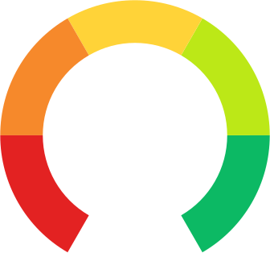

<div class="result-list-container px-0 px-sm-2 px-md-4" >

  <div id="result-information" class="result-info px-4 px-sm-0">
    <h3 class="result-title">Sökresultat <span (click)="tooltipEmployerData.toggle()"
                                              class="info-bubble-text"
                                              aria-label="Läs mer om sökresultatet">
                      <fa-icon [icon]="faInfoCircle"></fa-icon>
                    </span>
      <span class="info-bubble-text"
            #tooltipEmployerData="matTooltip"
            matTooltip="Sökresultatet visar förslag på arbetsgivare, ordnade efter relevans och sorterade enligt följande:
- Arbetsgivare där det finns historisk data.
- Arbetsgivare som beräknas nyrekrytera.
- Arbetsgivare som är indirekt relaterade till sökningen, till exempel tillhör samma bransch."
            matTooltipPosition="right" matTooltipClass="wide-tooltip"></span></h3>
    <div class="result-info-wrapper">
      <div class="info-type" *ngIf="searchService.currentSearch.yrke">
        <span class="result-info__label">Yrke: </span>
        <span class="result-info__value">{{
          searchService.currentSearch.yrkeNamn
          }}</span>
      </div>

      <div class="info-type" *ngIf="searchService.currentSearch.bransch">
        <span class="result-info__label">Bransch: </span>
        <span class="result-info__value">{{
          searchService.currentSearch.branschNamn
          }}</span>
      </div>

      <div class="info-type" *ngIf="searchService.currentSearch.location">
        <span class="result-info__label">Region: </span>
        <span class="result-info__value">{{
          searchService.currentSearch.location.name
          }}</span>
      </div>

      <div class="info-type" *ngIf="searchService.currentSearch.fritext">
        <span class="result-info__label">Sökord: </span>
        <span class="result-info__value">{{
          searchService.currentSearch.fritext
          }}</span>
      </div>
    </div>
    <div *ngIf="!searchService.isLoadingFirstPageResult">
      <div class="info-type">
        <span class="result-info__label">Antal arbetsgivare: </span>
        <span class="result-info__value">{{ totalCount() }}</span>
      </div>
      <div class="info-type" *ngIf="totalEmployees() > 0">
        <span class="result-info__label">Antal anställda: </span>
        <span class="result-info__value">{{ totalEmployees() | roundDynamicUnit }}</span>
      </div>
    </div>
  </div>
  <div *ngIf="searchService.isLoadingFirstPageResult && !searchService.isBackendError" class="searchresultspinner-area">
    <mat-spinner class="jobbometer-spinner" [diameter]="40" aria-label="Sökning pågår"></mat-spinner> Sökning pågår..
  </div>
  <div *ngIf="searchService.isBackendError" class="searchresultbackenderror-area">
    <fa-icon [icon]="faBackendError"></fa-icon> <span class="errortext">Oj, något gick fel..</span>
  </div>

  <div id="result-list-items-container"  class="result-list-items-container"
       infiniteScroll
       [infiniteScrollDistance]="2"
       [infiniteScrollThrottle]="50"
       (scrolled)="onResultItemsScroll()"
       [scrollWindow]="false">
      <div *ngIf="!searchService.isLoadingFirstPageResult">
      <div *ngFor="let employer of getEmployerLights();let i = index"
           [index]="i+1 + (searchService.page-1)*searchService.nrDocsInPage">
          <button [routerLink]="" (click)="setEmployerInfo(employer)" class="result-list-item"
                  [ngClass]="{'selected-employer' : employer===selectedEmployer}">
              <span class="group top">
                <span *ngIf="getGrowthPercent(employer);let growthPercent" class="group-2">
                   -1000000"
                          class="jobbometer__icon"
                          src="../../assets/icons/speedo-1.svg"
                  />
                  = 0 && growthPercent <= 3"
                          class="jobbometer__icon"
                          src="../../assets/icons/speedo-2.svg"
                  />

                   3 && growthPercent <= 6"
                          class="jobbometer__icon"
                          src="../../assets/icons/speedo-3.svg"
                  />

                   6 && growthPercent < 10"
                          class="jobbometer__icon"
                          src="../../assets/icons/speedo-4.svg"
                  />

                  = 10"
                          class="jobbometer__icon"
                          src="../../assets/icons/speedo-5.svg"
                  />
                </span>
                <span *ngIf="getGrowthPercent(employer) === undefined" class="group-2">
                  
                </span>
                <span>
                  <h2 class="result__name">{{ employer.namn }}</h2>
                </span>
              </span>
          </button>
      </div>
      </div>
      <div *ngIf="searchService.isLoadingPageResult && !searchService.isLoadingFirstPageResult" class="searchresultspinner-area">
          <mat-spinner class="jobbometer-spinner" [diameter]="40" aria-label="Laddar resultat"></mat-spinner> Laddar..
      </div>
  </div>
</div>
